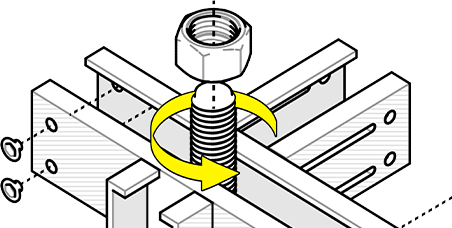
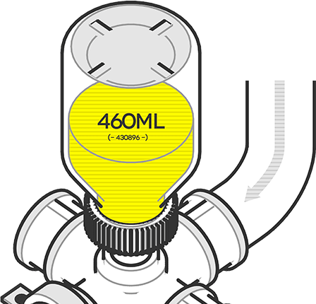
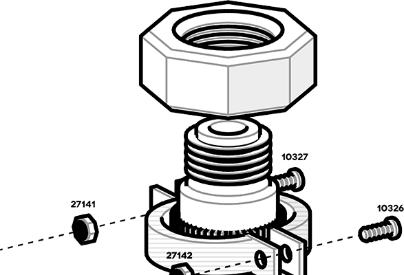

巡检任务北区装配线
剩余 6 台设备待巡检，预计 40 分钟。

源站控件包共 30 项，全部是营销站点控件：以展示和翻页为主，没有任何表单输入、数据展示和状态反馈类控件。对照模板的 26 项功能控件，12 项可以从源站控件改造得到，14 项源站完全没有，本页按源站的视觉语言新做。

品牌黄只作填充色，其上文字一律为墨色。浅色模式下，选中类强状态使用墨色填充配黄色标记；深色模式反转为黄色填充配墨色标记。
黄色只作纯色填充或深色面上的文字，不做浅色衬底，也不在浅色面上作文字色。
深色模式使用源站 dark scene 取值：
成功使用源站色条中的绿色，错误使用游戏战斗界面的血条红，警告使用黄黑警示条纹。功能色以纯色标记出现：图标、左侧色条、状态点、进度填充；不作浅色衬底。红色在白底上对比度 4.80:1，可作错误说明文字；其余功能色不作文字。标记外沿加 1px 墨色描边。
--color-success #00ffa2--color-error #d03c34--hazard #fffa00 / #191919--color-info #191919 / #ededed| Token | 浅色模式 | 深色模式 | 用途 |
|---|---|---|---|
| Background | |||
--color-bg-page | #ffffff | #131315 | 页面、输入框 |
--color-bg-surface | #fafafa | #1f1f22 | 卡片、面板、侧栏、表头 |
--color-bg-raised | #ffffff | #1f1f22 | 对话框、菜单（配合阴影） |
--color-bg-muted | #e6e6e6 | #35373c | 进度轨道、骨架、中性标签 |
--color-bg-selected | #e6e6e6 | #35373c | 选中的行与菜单项 |
--color-state-hover | #f2f2f2 | #2e2e2e | 悬停底色 |
--color-state-pressed | #d9d9d9 | #383838 | 按下底色 |
--color-bg-disabled | #f2f2f2 | #1f1f22 | 禁用控件 |
--color-bg-emphasis | #191919 | #35373c | 轻提示、悬浮说明 |
--color-bg-overlay | rgba(0,0,0,.6) | rgba(0,0,0,.7) | 对话框遮罩（唯一使用透明度的颜色） |
| Text | |||
--color-text-primary | #191919 | #ededed | 正文、标题、输入值 |
--color-text-secondary | #666666 | #a6a6a6 | 次要文字、占位文字 |
--color-text-tertiary | #7c7c7c | #999999 | 补充说明，不承载必读信息 |
--color-text-disabled | #b3b3b3 | #626262 | 禁用文字 |
--color-text-link | #191919 | #fffa00 | 链接，带下划线 |
| Border | |||
--color-border-subtle | #d9d9d9 | #35373c | 分隔线、卡片、表格线 |
--color-border-control | #858585 | #858585 | 输入框、复选框、次要按钮 |
--color-border-strong | #191919 | #ededed | 悬停与聚焦边框 |
--color-focus-ring | #191919 | #fffa00 | 键盘焦点环 |
| ActionStatus | |||
--color-accent | #fffa00 | #fffa00 | 强调按钮 |
--color-primary | #383838 | #ededed | 主要按钮 |
--color-primary-tick | #fffa00 | #191919 | 主要按钮左侧竖条 |
--color-checked | #191919 | #fffa00 | 勾选底色、开关轨道、指示条、进度填充 |
--color-on-checked | #fffa00 | #191919 | 勾选标记、开关滑块 |
--color-success | #00ffa2 | #00ffa2 | 成功标记 |
--color-error | #d03c34 | #d03c34 | 错误标记、危险按钮、错误边框、浅色面上的错误说明 |

字体、字号、间距、圆角、阴影、动效、层级与图标，数值沿用源站。
--font-body --font-medium --font-bold--font-en--font-numeric--font-tech--fs-display40px--fs-h228px--fs-h318px--fs-lead16px--fs-body14px--fs-small13px--fs-caption12px--fs-overline11px--space-14图标与文字、标签与输入框--space-28控件内元素、按钮组--space-312输入框与 sm 按钮内边距--space-416卡片内边距、md 按钮内边距--space-520lg 按钮内边距--space-624对话框内边距、区块内分组--space-832区块内段落之间--space-1248区块之间--radius-sm 2按钮、输入框、标签--radius-md 4卡片、对话框、菜单--radius-full头像、圆形按钮--shadow-sm主要按钮、强调按钮--shadow-lg菜单、对话框、轻提示无阴影卡片与面板用 1px 边框--duration-base200msease颜色、边框、竖条长度过渡--duration-slow300msease开关滑块、图标动作、面板展开--z-dropdown100下拉选择菜单--z-sticky200吸顶表头、顶部栏--z-modal300对话框--z-toast400轻提示--z-tooltip500悬浮说明宽高 16 的网格，1.6px 描边，直角端点与斜接转角，单色 currentColor。使用尺寸 16、20、32；不使用第三方图标库。
右侧示例为静态定格，便于对照；页面其余控件均可直接用指针和键盘操作。
--color-primary --color-primary-hover --color-primary-active --color-primary-tick --color-accent --color-accent-hover --color-accent-active --color-error --color-border-control --color-state-hover --color-state-pressed --radius-sm --size-control-*同按钮--radius-full--shadow-sm--color-checked（切换型）aria-pressed）--color-text-link --color-bg-selected --color-text-disabled --color-focus-ring源站没有任何表单控件，本组全部新做。边框保持近直角 2px，选中类控件沿用"墨底黄标"。
--color-bg-page --color-border-control --color-border-strong --color-text-secondary --color-error --color-bg-disabled --radius-sm同单行文本框--color-bg-raised --shadow-lg --radius-md --color-bg-selected --color-state-hover--color-border-control --color-checked --color-on-checked --color-error --radius-sm--color-border-control --color-checked --color-on-checked--color-border-control --color-checked --color-on-checked --color-bg-page --duration-base--color-bg-emphasis --color-text-on-emphasis --color-success --color-error --color-warning --shadow-lg --radius-sm--color-bg-surface --color-border-subtle --color-success --color-error --hazard --color-info --radius-smrole="alert"，其余使用 role="status"提交后工单将进入审核，审核期间不可修改内容。
删除后该设备的 1,284 条运行记录将一并清除，且无法恢复。输入 EQ-0142 以确认。
--color-bg-raised --color-bg-overlay --shadow-lg --radius-md --color-border-subtle--color-bg-emphasis --color-text-on-emphasis --radius-sm --font-tech--color-border-subtle --color-text-primary --color-bg-muted --color-state-hoverrole="status" 并提供文字标签--color-bg-muted --color-checked --color-error --font-numericrole="progressbar" 与 aria-valuenowDOC-000031规程EQ-0142待检修--color-bg-surface --color-border-subtle --color-border-strong --color-checked --color-on-checked --radius-md --font-numeric--color-bg-muted --color-accent --color-text-on-accent --color-success --color-error --color-warning --radius-sm--radius-full --color-bg-muted --color-text-secondary --color-success --color-bg-pageID-0002402.4 MB860 KB14:2014:0513:48--color-state-hover --color-state-pressed --color-bg-selected --color-checked --color-border-subtle --color-text-secondary| 设备编号 | 名称 | 区域 | 状态 | 更新时间 | |||
|---|---|---|---|---|---|---|---|
EQ-0142 | 输送带 A-02 | 北区装配线 | 待检修 | 91% | 412 h | 09-30 14:20 | |
EQ-0207 | 冷却泵 P-11 | 北区仓储 | 运行中 | 68% | 1,206 h | 09-30 14:18 | |
EQ-0311 | 分拣机 S-04 | 北区装配线 | 运行中 | 54% | 88 h | 09-30 14:15 | |
EQ-0418 | 空压机 K-02 | 南区冶炼 | 停机 | 0% | 2,940 h | 09-30 13:52 | |
EQ-0502 | 破碎机 C-03 | 南区封存 | 离线 | 未上报 | 5,118 h | 09-12 08:00 |
--color-bg-surface --color-border-subtle --color-state-hover --color-bg-selected --color-checked --color-text-secondary--color-bg-surface --color-border-subtle --color-border-strong --color-text-primary --color-text-secondary --y-300 --font-numeric--color-bg-surface --color-border-subtle --color-checked --color-text-primary --color-text-secondary --font-numeric--color-border-subtle --color-border-strong --color-text-tertiary添加第一台设备后，这里会显示它的运行状态与负载。
当前筛选条件下没有设备。可以放宽状态或区域条件。
南区网关未响应。请检查网络后重试。
--color-text-tertiary --color-text-primary --color-text-secondary --tex-points